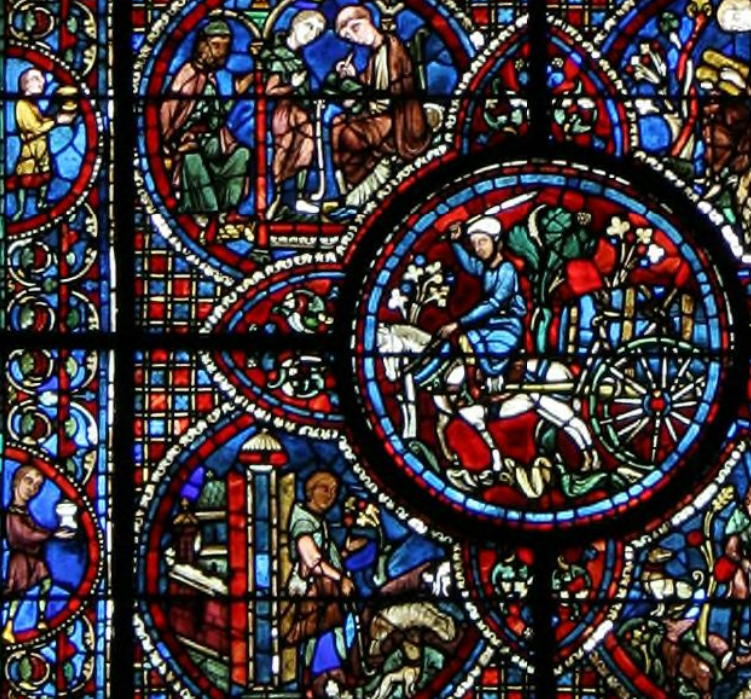
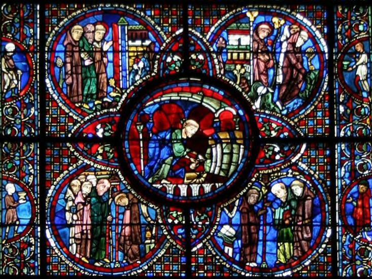
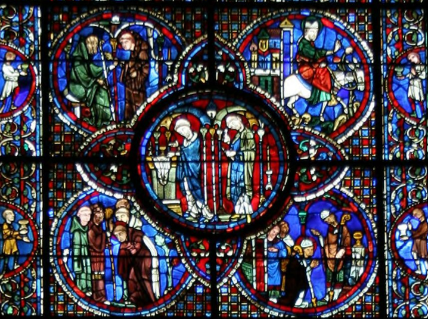

Chartres Cathedral stands southwest of Paris, rebuilt after the devastating fire of 1194 and completed within thirty years. It is one of the finest examples of French Gothic architecture — but its real treasure is the glass.
Of the original 176 stained glass windows, 152 survive intact from the 12th and 13th centuries. This makes Chartres the most complete collection of medieval stained glass in the world.
For the first time in medieval art, the lowest registers of cathedral windows depict working tradespeople — not nobles, not clergy, but bakers, butchers, tanners, and wine merchants.
What makes Chartres unusual is not just the quantity, but who paid for it. These were the donors. They funded the windows and made sure you saw them in the glass.

the wine merchants' window
One such window belongs to the wine merchants and innkeepers of Chartres: the Life of Saint Lubin, in Bay 45 of the north nave aisle, dating to around 1205–1215.

Lubin — also known as Leobinus — was born a peasant near Poitiers in the early 6th century. As a boy, he worked as a shepherd. A passing monk gave him an alphabet belt, and Lubin taught himself to read while tending sheep. He later entered monastic life and, through study and discipline, rose to become Bishop of Chartres in 544 CE.
Why did wine merchants claim him as their patron? The connection likely lies in his time as a cellarer — the monk responsible for a monastery's wine stores. In one scene depicted in the window, Saint Avitus presents Lubin with a key, possibly a reference to this role.

The wine trade and the Church were deeply intertwined: clergy owned vineyards, monasteries produced wine, and merchants distributed it. Lubin stood at this intersection.

from commerce to sacrament
The window makes the connection explicit. Four central medallions trace the journey of wine from commerce to sacrament: barrels rolled through the street, wine drawn from a cask, the chalice raised at Mass, and finally Christ in Majesty.

The borders are threaded with vines and grapes, scenes of cultivation enclosing the sacred narrative — the donors' livelihood framing theology.
The people who sold wine in the streets below paid for a window that showed wine becoming something else entirely.
It is a remarkable document. Their trade, elevated into theology. Their labor, rendered in light.
their labor, their light
At the base of the window, where visitors' eyes naturally fall first, the wine merchants appear: rolling barrels, pouring wine, serving customers. These are not anonymous figures. They are portraits of the donors themselves — men who wanted to be remembered not just as patrons, but as participants in the sacred story.
Above them rises the life of their patron saint. Higher still, Christ presides. The structure is intentional: earthly commerce at the foundation, sanctity in the middle, divinity at the apex. The whole window becomes a ladder from street to heaven — and wine is what connects the rungs.
Eight centuries later, the glass still glows. The merchants are long gone. But their claim remains, fixed in lead and color: we were here, we gave this, and wine was how we made it happen.